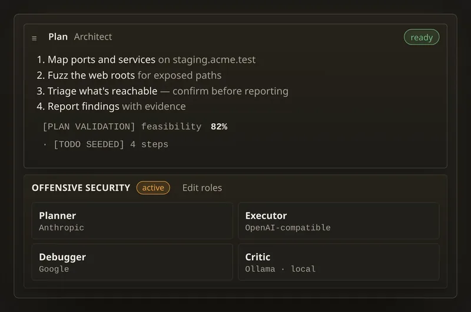

It thinks.
A plan before it acts. A model for every role.
Every task opens with a step-by-step plan, a feasibility score and a TODO list seeded from it. Planner, executor, debugger and critic can each run on a different model, and a role falls back to your chat model if its own is unavailable.
